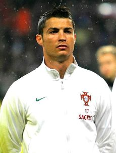

Криштиа́ну Рона́лду душ Са́нтуш Аве́йру
(порт. Cristiano Ronaldo dos Santos Aveiro;
род. 5 февраля 1985, Фуншал) —
португальский футболист, выступающий за
испанский клуб «Реал Мадрид» и сборную Португалии,
в составе которой стал чемпионом Европы 2016 года.
Являлся самым дорогим футболистом в истории футбола до 2013 года —
за его переход из английского
«Манчестер Юнайтед» в «Реал» было заплачено 80 млн фунтов стерлингов.
Лучший бомбардир в истории сборной Португалии, а также рекордсмен по количеству
сыгранных за неё матчей.
Считается одним из лучших футболистов современности.
Официально признан ПФФ лучшим игроком в истории португальского футбола.